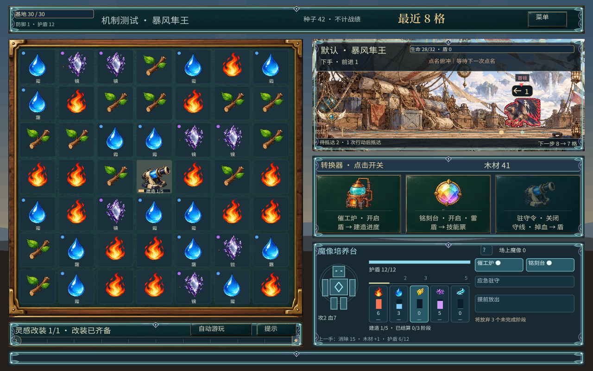

炮术师 · 组织火力
围绕炮台供能，搭配特种弹与锅炉，安排一轮爆发。
消除工坊 / 职业
交换方式相同，资源却能变成三套截然不同的战术。
围绕炮台供能，搭配特种弹与锅炉，安排一轮爆发。
栅栏留怪，弹簧回推，让敌人反复经过地刺。
护盾换来培养时间；继续攒技能，还是提前放出救场？

一次性拖放像手动开炮，改成常驻耐久，再改成点击连放。阵地、碰撞、附魔各有卡牌路线。
反击要等敌人打基地，放电又和防守抢盾。改成盾换时间、魔像主动打。卡牌围绕速造、铭刻、蓄盾。
文字反馈改成弹药、耐久、技能票和培养阶段。双尺寸点过之后，修了遮挡、票柱方向和行动锁。